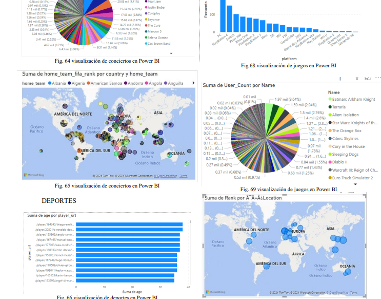
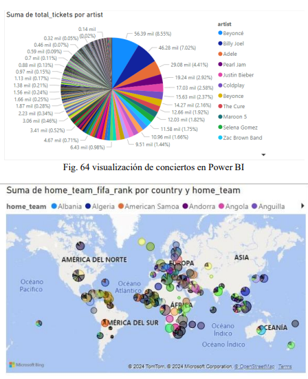
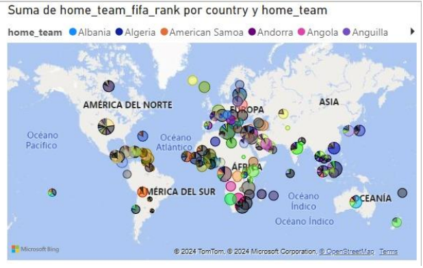

Al revisar la documentación presentada, se observa que el proyecto no ha sido definido correctamente, ya que los temas seleccionados no fueron delimitados de manera clara. La documentación se centra más en cómo realizar los análisis en lugar de explicar el porqué de los mismos, lo que dificulta la extracción de conclusiones significativas. Además, las capturas de código carecen de un análisis previo que brinde contexto para interpretar los resultados.
Otro aspecto negativo es la falta de claridad y legibilidad en las imágenes de análisis presentadas, las cuales no aportan datos relevantes para realizar un análisis adecuado de los datos. Por ejemplo, en el gráfico de barras que muestra el número de conciertos realizados por género, no se presentan los resultados del análisis de manera específica. Sería beneficioso delimitar los conciertos en una línea de tiempo de 5 años o por países, o incluso ser más detallado al analizar por estados.


Un caso similar ocurre con el gráfico en un mapa que menciona "home_team_fifa_rank" por país y por equipo local, sin definir claramente qué significa "home_team_fifa_rank" ni cuál es el objetivo del estudio. Estas deficiencias evidencian problemas en la organización y comprensión del equipo de análisis, lo que afecta la presentación adecuada de los resultados. Se recomienda delimitar claramente los temas de estudio para mejorar la calidad del proyecto en su totalidad.